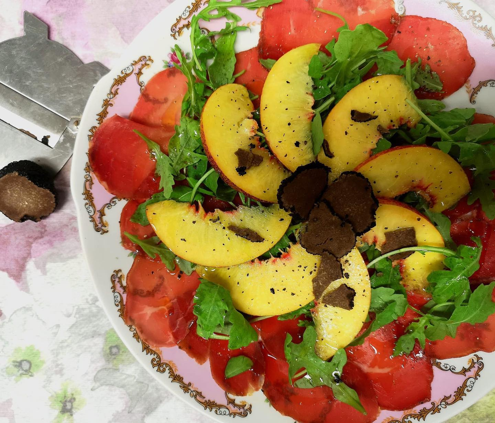
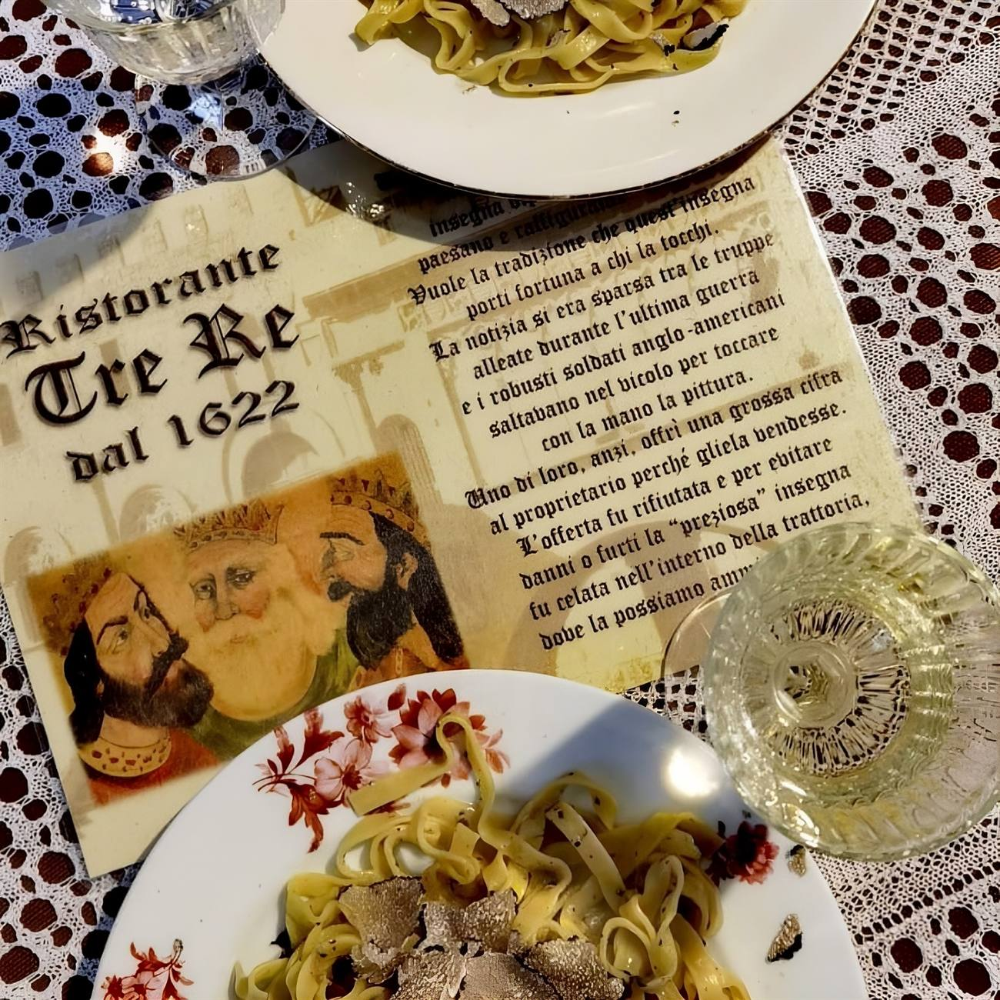
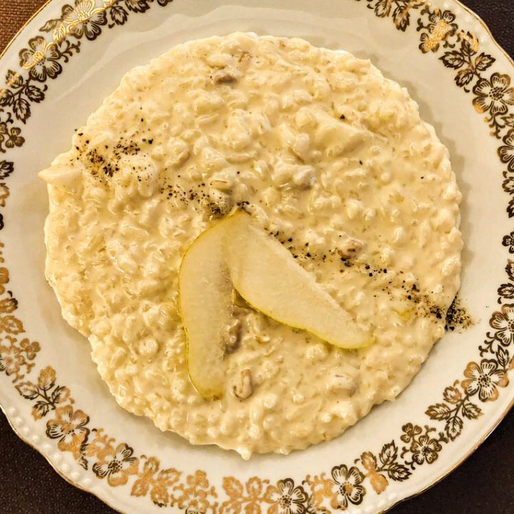
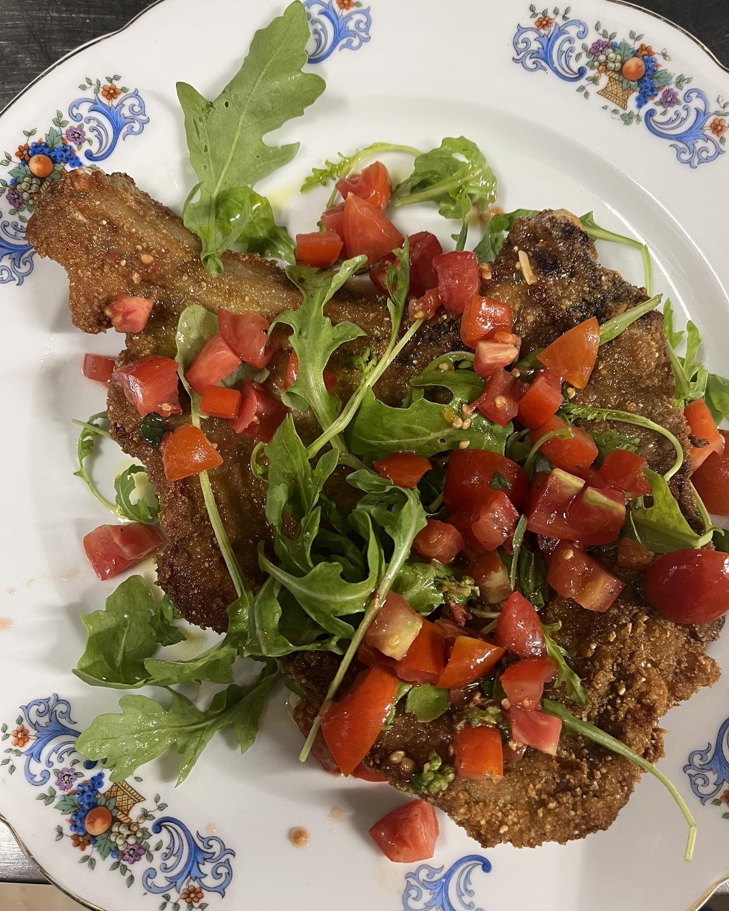
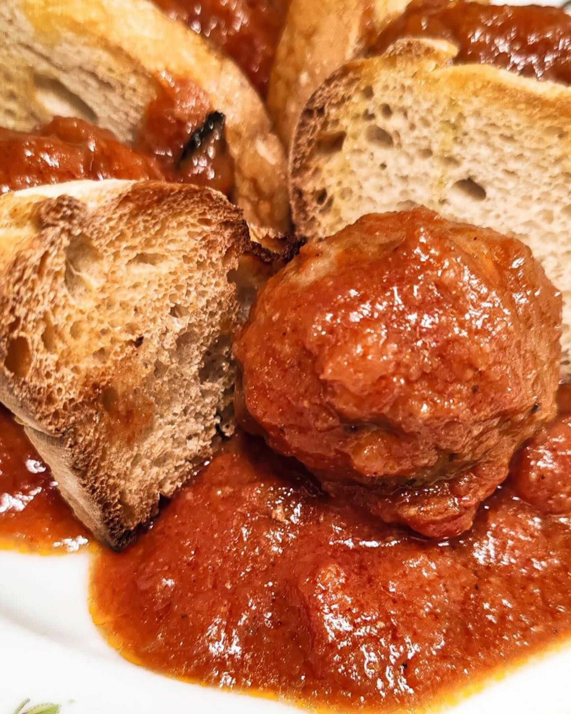
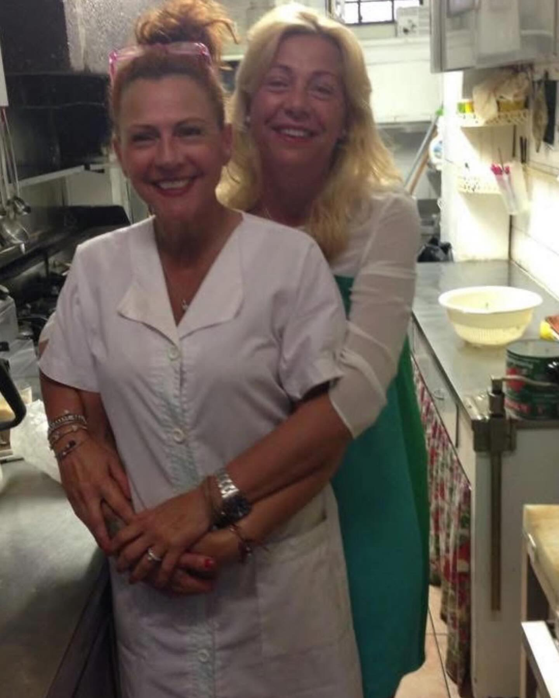
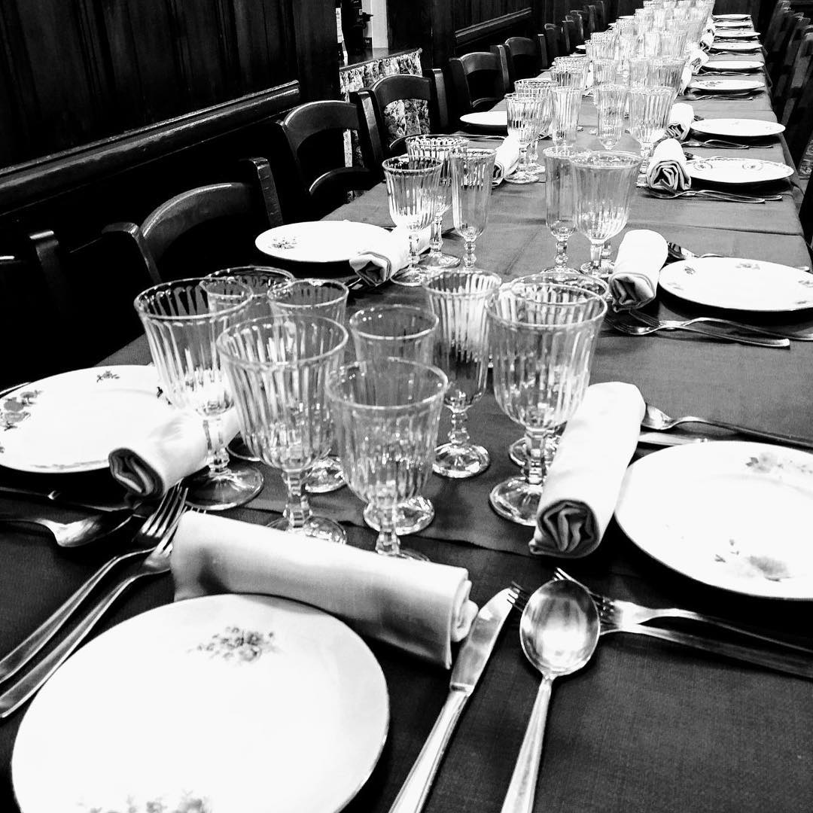
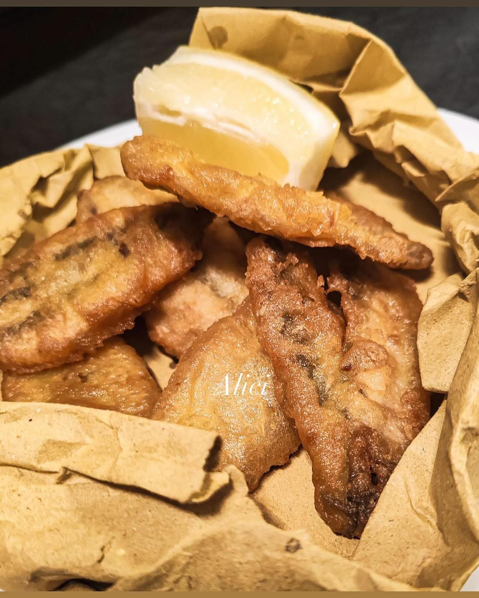
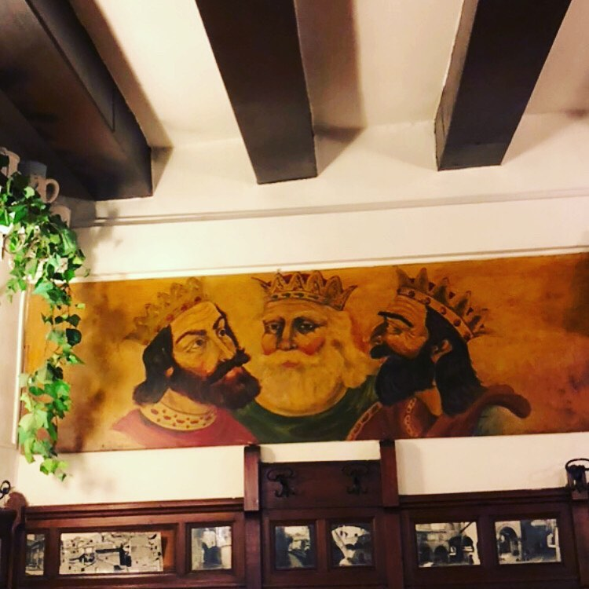
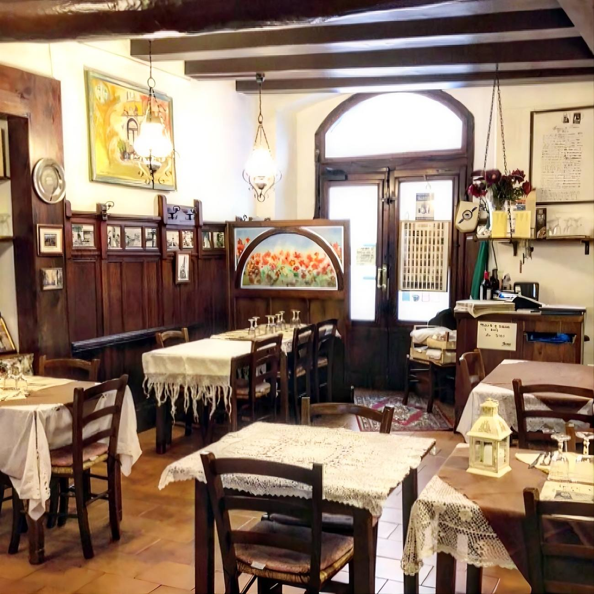

Ingredienti Locali
Selezioniamo materie prime del territorio laziale per valorizzare sapori netti, stagionali e autentici.
Ristorante Tre Re - Viterbo - Dal XVII secolo
Da quattro secoli accogliamo viandanti e buongustai nel cuore della città medievale. Benvenuti nel ristorante più antico di Viterbo.
Ti aspettiamo a tavola: vedi gli orari di apertura.
4 Secoli di Ospitalità
Da oltre quattrocento anni il Tre Re è una tappa sicura per chi arriva a Viterbo: pellegrini, mercanti, artisti, famiglie. In queste sale si è sempre servita cucina sincera, legata alla terra e al ritmo delle stagioni.
Qui il tempo non si rincorre: si custodisce. Ogni piatto nasce da gesti antichi, tramandati di mano in mano, con la stessa cura con cui si conserva un libro prezioso. Entrare al Tre Re significa accomodarsi dentro una storia viva.

La Nostra Cucina

Selezioniamo materie prime del territorio laziale per valorizzare sapori netti, stagionali e autentici.

Dalla pasta fatta a mano ai sughi lenti: il nostro ricettario è frutto di generazioni di esperienza.

Tagli selezionati, cotture accurate e primi robusti: la cucina viterbese raccontata con mano sicura.
Ieri e Oggi





